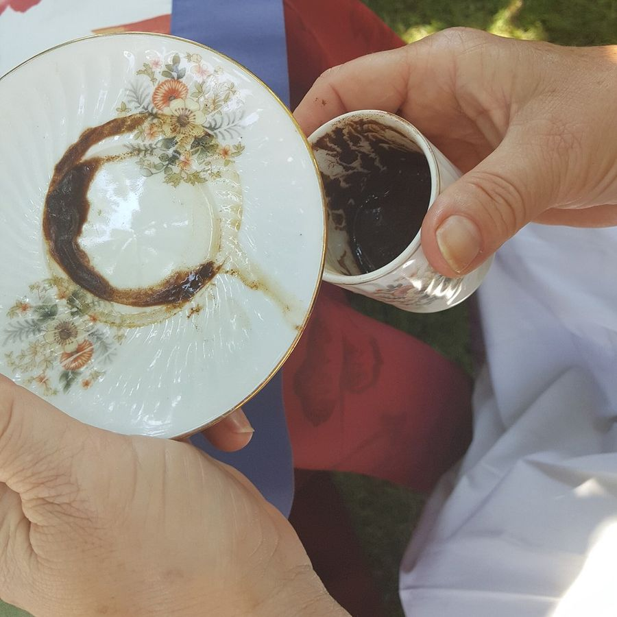

Seersay is an AI reader for Turkish coffee cups, tarot, palms and your birth chart. It marks the shape in your cup, the detail on your card, the line on your hand or the aspect in your chart, and tells you why it reads it that way.
Written by AI, not a person. One free reading a day. For entertainment.
You ask“I'm thinking of moving cities. What does my cup say?”
Tap a number. Rim is soon, the walls are a while off, the bottom is later, and the handle side is you and your home. That's one common way to read the zones; readers differ by region.
You ask“Things with a friend went quiet. Where do we stand?”
Two of Cups, Rider-Waite-Smith deck, 1909. Tap a number.
You ask“I keep putting off a big change. What does my hand say?”
An illustration. On your own photo the lines are traced the same way. Tap a number.
You ask“Why do I keep feeling pulled between work and home?”
Demo chart: born 14 March 1995, 08:30, Istanbul. Placidus houses. Tap a number.
Demo readings written by us to show the format.
Seersay is an AI. Every reading is written by an AI model, not by a person, and no human looks at your cup, cards or hand. For photos, the model finds the shapes or lines and marks them on your picture so you can check what it saw, then reads them by the rules of that tradition, which we publish on this page. Your birth chart is calculated by astronomy software; the AI only writes the words about it. It can misread a shape, and it can't see the future. For entertainment.
Your photo is used only to make your reading. We don't keep it on our servers after the reading, don't use it to train anything, and never sell or share it.
No questions about health, death, pregnancy, gambling, money or investing. No curses, no evil eye, nothing you pay to 'fix'.
Questions about your job are fine. We won't read salaries, offers or investments.
Each one shows its marks. That's the whole idea, so we kept it to the four where it works.
Don't drink Turkish coffee? Tarot, palm and your chart don't need any.

Coffee cup reading is a Turkish tradition, also read across Greece, the Balkans, the Middle East and Iran. Seersay follows the Turkish rules, and here they are.
We keep the old meanings sharp. We never tell you something bad is coming and then ask you to pay to fix it.
Read cups yourself and see a meaning we got wrong? Tell us.
Past, present, next, from the 1909 Rider-Waite-Smith deck. Each card's reading circles the detail it's reading from.
Demo · sample questions · for entertainment
Pick a question, then tap a card.
Circled: the lantern he holds up
He holds the lantern up to light his own way, not anyone else's. You've already had time alone to work out what you want here.
Circled: two cups held out, meeting in the middle
Both of them reach out with a cup and they meet halfway. This reads as even ground: a text from you lands as half of a meeting, not a chase.
Circled: his folded arms
He sits back with his arms folded and nine cups behind him. Read as being fine either way, so send it because you want to, not to get something back.
Heart, head, life and fate lines, traced on your own photo and named. The life line is read as energy and big changes, never as how long you'll live.
Placidus houses by default, Whole Sign if you prefer. Your Ascendant and Midheaven are included. Major aspects, each with its orb shown. No birth time? We'll tell you and leave houses out.
The numbers come from astronomy software. The AI only writes the words.
The question box works here too: ask about your chart, and your free reading for the day can be that question. With Plus, monthly transits are marked on your wheel, each one listed with the date it's exact.
Your daily horoscope says 'a good week for love.' Your chart says which planet, which house, and why.
Buy Plus as a monthly subscription you can cancel any time, or as a single 30-day pass that doesn't renew. Same $6. No weekly plans. No charge per reading. No paywall before your first reading.
At launch you can ask one follow-up about any reading. A full back-and-forth about your cup, cards or chart comes later. Tell us on the list if that's why you'd come.
Dreams or numerology? Only if enough of you ask. Pick 'Something else' above.